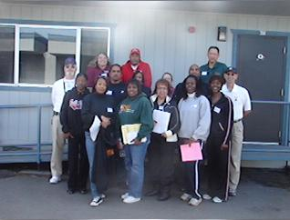
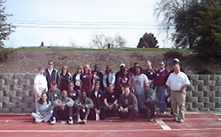

Partnership between the PA Officials Committee and the PA Youth Committee (PAYC) resulted in the creation of a youth focused USATF Official Certification and USATF Official Re-certification clinic. An additional Umpire and Race Walk clinic was also taught. The PAYC would like to thank Jim Hume, Irene Herman, Shirley Conner, George Kleeman and Art Klein who traveled to Oakmont HS in Roseville to run these four clinics. These classes offered many hours of hands-on instruction as we worked our way around the track using real life scenarios to role play how to officiate a youth track meet. There is one more officials clinic left in the 2009 season ... the weekend of February 21 at Hartnell College. Check out the Officials section of the PA website for more details. Don't miss this opportunity to stretch your track and field skill sets!
Many clubs were represented at these clinics ...

